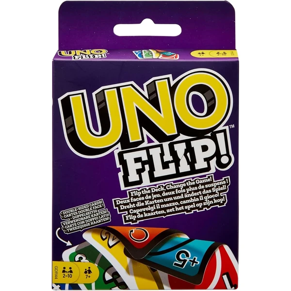
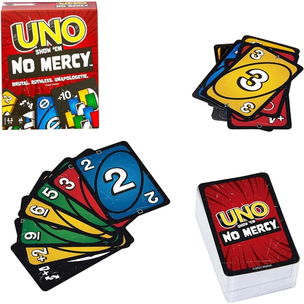
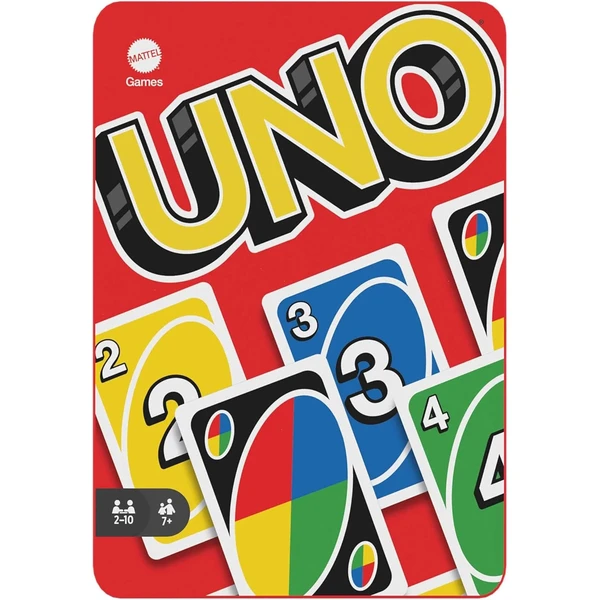
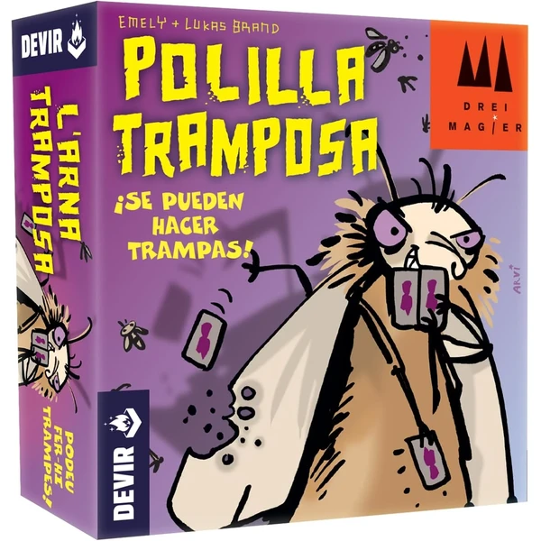
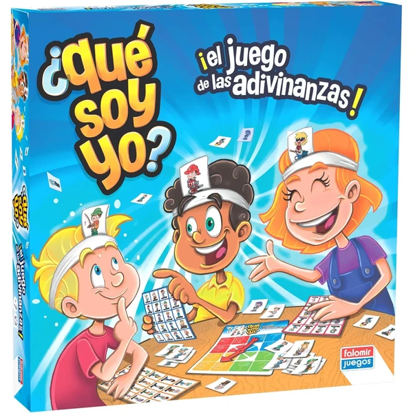
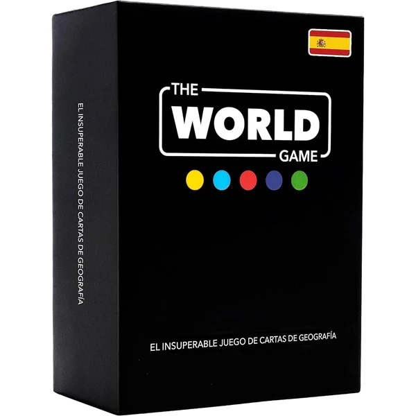
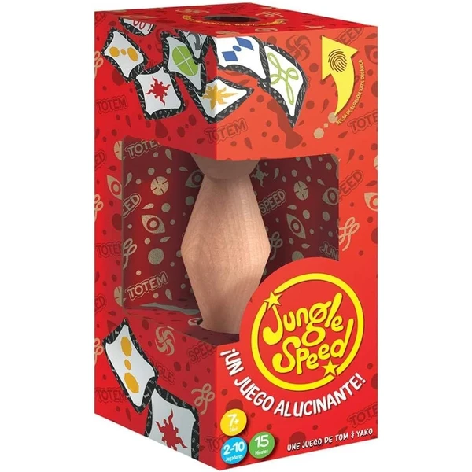
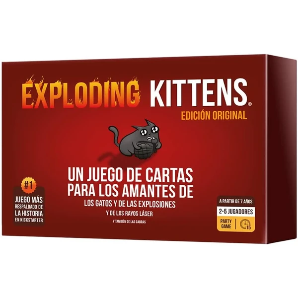
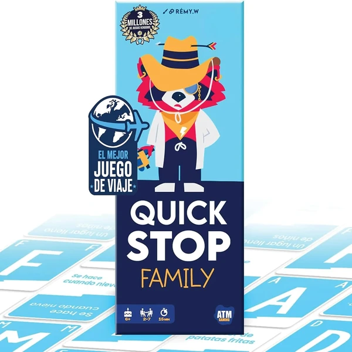

Mattel Games UNO Original
El clásico juego de cartas de emparejar colores y números, con cartas especiales que le dan un extra de diversión. Partidas rápidas para 2 a 10 jugadores, ideales para cualquier momento del día.
⭐ ¿Por qué nos gusta?
- ✔ Reglas sencillas, fáciles de aprender.
- ✔ Para 2 a 10 jugadores a la vez.
- ✔ Cartas especiales que añaden estrategia.
💬 Lo que más destacan las familias
Las familias destacan que es un juego muy fácil de aprender, divertido tanto para niños como para adultos y perfecto para partidas rápidas en cualquier momento. Es de esos juegos que nunca falta en una noche familiar.
Ver en Amazon

UNO Flip
Una variante del clásico UNO con cartas de doble cara y una carta especial que da la vuelta a todo el mazo, descubriendo colores y números completamente nuevos. Incluye símbolos para jugadores daltónicos.
⭐ ¿Por qué nos gusta?
- ✔ Cartas de doble cara con un giro sorpresa.
- ✔ Nuevas cartas especiales más competitivas.
- ✔ Símbolos para jugadores daltónicos.
💬 Lo que más destacan las familias
Quienes ya conocían el UNO clásico comentan que el giro de cartas le da un aire completamente nuevo al juego. Los niños se divierten mucho con el efecto sorpresa de dar la vuelta a todo el mazo.
Ver en Amazon

Mattel Games UNO No Mercy
Una versión más intensa del UNO con cartas y reglas adicionales para partidas todavía más competitivas. Incluye penalizaciones acumulables y cambios de mano entre jugadores.
⭐ ¿Por qué nos gusta?
- ✔ Reglas nuevas más competitivas.
- ✔ Penalizaciones que se pueden acumular.
- ✔ Ideal para quienes ya conocen el UNO clásico.
💬 Lo que más destacan las familias
Muchos padres coinciden en que es la versión perfecta para cuando ya se domina el UNO clásico y se busca algo más competitivo. Las nuevas reglas generan bastantes risas y algún que otro grito de protesta.
Ver en Amazon

UNO Coleccionable en Lata
El clásico UNO presentado en una lata reutilizable de material reciclable, ideal para guardar las cartas o llevarlo de viaje. Mismas reglas de siempre en un formato más resistente.
⭐ ¿Por qué nos gusta?
- ✔ Lata reutilizable y 100% reciclable.
- ✔ Fácil de guardar y transportar.
- ✔ Mismas reglas del UNO clásico.
💬 Lo que más destacan las familias
Entre los comentarios más habituales aparece lo práctico que resulta guardar las cartas en la lata, sobre todo para llevarlo de viaje. Es el mismo UNO de siempre, pero en un formato que dura más tiempo intacto.
Ver en Amazon

Devir Polilla Tramposa
Un juego de cartas rápido en el que hay que quedarse sin cartas jugando números superiores o inferiores, permitiendo hacer trampas para ganar. Partidas de 15 a 25 minutos, premiado internacionalmente.
⭐ ¿Por qué nos gusta?
- ✔ Reglas sencillas y partidas rápidas.
- ✔ Premiado como mejor juego infantil en 2012.
- ✔ Permite hacer trampas, lo que añade humor.
💬 Lo que más destacan las familias
Una de las cosas que más se repite es lo divertido que resulta poder hacer trampas sin que nadie se enfade, ya que es parte del juego. Las partidas se hacen cortas y dan pie a repetir varias veces seguidas.
Ver en Amazon

Falomir ¿Qué Soy Yo?
Un juego de adivinanzas en el que cada jugador lleva una carta en la cabeza que todos ven menos él, y debe hacer preguntas para descubrir qué oficio le ha tocado. Fomenta el vocabulario y el pensamiento deductivo.
⭐ ¿Por qué nos gusta?
- ✔ Formato divertido con cartas en la cabeza.
- ✔ Mejora vocabulario relacionado con oficios.
- ✔ Favorece el pensamiento deductivo.
💬 Lo que más destacan las familias
Lo que más suele gustar es el formato de adivinanzas con la carta en la cabeza, que hace reír a toda la familia por igual. Los niños disfrutan aprendiendo palabras nuevas relacionadas con los oficios.
Ver en Amazon

The World Game Geografía
Un juego de cartas educativo con los 194 países del mundo, sus capitales y banderas, más un mapa mundi incluido. Combina memoria y aprendizaje de geografía para toda la familia.
⭐ ¿Por qué nos gusta?
- ✔ Incluye los 194 países y un mapa mundi.
- ✔ Combina juego y aprendizaje de geografía.
- ✔ Información actualizada frecuentemente.
💬 Lo que más destacan las familias
Una característica muy mencionada es lo bien que combina el juego con el aprendizaje de países, capitales y banderas. Los padres valoran que sirva tanto para jugar en casa como para entretenerse en los viajes.
Ver en Amazon

Hundir la Flota
El clásico juego de combate naval, en el que hay que localizar y hundir todos los barcos del rival por turnos. Incluye dos estuches portátiles y una opción de ataque múltiple para jugadores avanzados.
⭐ ¿Por qué nos gusta?
- ✔ Clásico juego de estrategia naval.
- ✔ Estuches portátiles, fácil de llevar.
- ✔ Modo avanzado con ataques múltiples.
💬 Lo que más destacan las familias
No es raro encontrar comentarios sobre lo bien que envejece este clásico, que sigue enganchando a los niños igual que hace años. Se valora también que sea fácil de llevar a cualquier sitio gracias a sus estuches.
Ver en Amazon

Asmodee Jungle Speed
Un juego de rapidez en el que hay que identificar símbolos idénticos y ser el más veloz en atrapar el tótem central. Partidas de apenas 10 minutos para 2 a 10 jugadores.
⭐ ¿Por qué nos gusta?
- ✔ Partidas muy rápidas, de unos 10 minutos.
- ✔ Válido para hasta 10 jugadores.
- ✔ Empaquetado 100% ecológico.
💬 Lo que más destacan las familias
Se repite bastante el comentario de que las partidas son tan rápidas que apetece jugar una tras otra sin parar. Es un juego que funciona muy bien en grupos grandes, por lo sencillo de sus reglas.
Ver en Amazon

Asmodee Exploding Kittens
Un juego de cartas estratégico y con mucho humor en el que hay que evitar robar un gato explosivo mientras se intenta sabotear a los demás jugadores. Partidas de unos 15 minutos para 2 a 5 jugadores.
⭐ ¿Por qué nos gusta?
- ✔ Mecánica sencilla con mucho humor.
- ✔ Cartas de acción que añaden estrategia.
- ✔ Partidas cortas, de unos 15 minutos.
💬 Lo que más destacan las familias
Los compradores valoran especialmente el toque de humor de las cartas, que hace que hasta perder resulte divertido. Las partidas cortas invitan a jugar varias rondas seguidas sin que nadie se aburra.
Ver en Amazon

ATM Gaming Quickstop Family
Un juego de mesa rápido basado en el clásico Stop, que combina agilidad mental y risas para toda la familia. Partidas cortas de 15 a 30 minutos, ideales para jugar en cualquier lugar.
⭐ ¿Por qué nos gusta?
- ✔ Partidas rápidas de 15 a 30 minutos.
- ✔ Combina agilidad mental y diversión.
- ✔ Impreso en la UE con papel sostenible.
💬 Lo que más destacan las familias
Quienes lo han comprado destacan que es un juego muy versátil para llevar de viaje, a la piscina o a cualquier reunión familiar. Los niños disfrutan del punto de agilidad mental que exige cada ronda.
Ver en Amazon